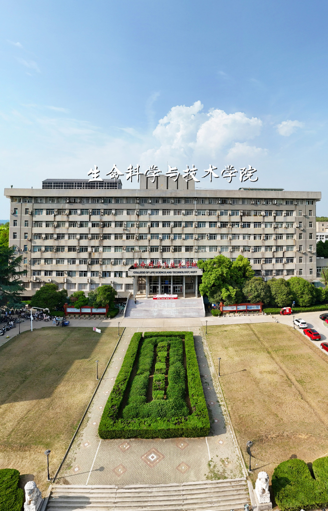

After years of development, Digital PET Laboratory has established a vertically integrated
R&D platform encompassing "key materials - key components - core modules - core software -
complete systems" and has developed the
following core platform:
After years of development, we have established a technical platform covering
scintillation crystal design, growth, testing, and application. We possess self-developed
crystal growth equipment utilizing the Czochralski, Bridgman-Stockbarger, Edge-defined
Film-fed Growth (EFG), and micro-pulling-down methods, equipped with functionally
expandable automated crystal growth software, and have established testing systems for
both the fundamental properties and end-use applications of scintillation crystals. To
meet the development needs for new structures and new principles in scintillation
crystals, we can flexibly customize novel crystal growth and testing methods, providing an
innovative incubation platform for outstanding students and top-tier talent, thereby
facilitating the exploration, discovery, and application of new crystal materials.
Ultra-Low-Light Detection Chip R&D Platform
After years of development, the team has established a full-chain technical platform
covering chip design, packaging & testing, and application, encompassing semiconductor
processes, device design, circuit design, layout design, tape-out, testing, and
application. We have built a core circuit IP library and a technical knowledge base,
forming a closed loop from market demand→ product iteration → market. We cultivate
students' genuine mastery of end-to-end chip design capabilities through practical
tape-out projects, supporting organized innovation.
Particle Detection R&D Platform
After years of development, the team has established a vertically integrated technical
platform encompassing "Nuclear Detection – Hardware Electronics — Data Algorithms" and has
developed the following core capabilities:
— System-Level Guiding Design and Performance Optimization: Guided by terminal detection
performance metrics, directs the definition of key parameters for upstream scintillation
materials, photoelectric devices, and readout electronics, achieving interdisciplinary
co-design and system-level performance optimization.
— ASIC Co-Design and System Verification: Deeply involved in the complete process of ASIC
design, leading chip specification architecture, metric definition, test verification, and
system-level integration to ensure precise matching between ASIC and detector system
performance.
— High-Frequency & High-Speed Mixed-Signal Design: Possesses capabilities in RF front-end
design, high-speed analog circuits, and high-density interconnect design, proficient in
high-frequency PCB layout and signal integrity optimization, supporting the realization of
high-performance mixed-signal systems.
— Modular & Scalable Electronics Architecture: Covers programmable FPGA platforms from
low-cost to high-performance, integrating self-developed real-time signal processing IP
cores, supporting flexible deployment from low-power portable devices to multi-channel
high-speed acquisition systems.
— System Integration & Reliability Engineering: Integrates thermal design and simulation,
structural optimization, and Electromagnetic Compatibility (EMC/EMI) system design,
validated through environmental testing and safety compliance verification, ensuring
long-term stable system operation in harsh environments.
Intelligent Imaging R&D Platform
The Plug-n-Image technology system establishes a new "plug-and-play" research paradigm.
Students can delve into complex underlying technologies or, by freely combining functional
modules like building blocks, efficiently construct innovative solutions. Leveraging the
team's built intelligent computing center and vast accumulated datasets, students
experience the complete closed loop from "software development → instrument deployment →
clinical validation", facing the end-to-end challenges from breakthrough intelligent
imaging technology to the realization of clinical value.
Multi-Modal Molecular Imaging R&D Platform
The Multi-Modal Molecular Imaging R&D Platform features a full range of advanced
all-digital PET systems, including clinical, brain-specific, helmet-type and small-animal
PET devices. It integrates high-field MRI, ultrasound, optical imaging and autoradiography
to deliver high-precision, multi-dimensional molecular imaging capabilities.
Complemented by well-equipped biochemical laboratories, the platform integrates imaging
and molecular experimental conditions. It supports disease mechanism research, drug
screening and validation, and research translation, providing full-cycle services
including experimental design, animal and clinical imaging, and data analysis. It serves
as a core collaborative platform linking fundamental research to industrial applications.
Leveraging its robust imaging research strengths, the platform has yielded numerous
high-profile findings published in authoritative journals such as Nature Medicine, Nature
Communications, and CNS Neuroscience & Therapeutics.
Radiopharmaceutical R&D Platform
The Radiopharmaceutical R&D Platform serves as the upstream core module for novel
radiotracer and radiopharmaceutical development. It is fully equipped with a cyclotron,
hot cells and dedicated synthesis modules to enable independent radiopharmaceutical
preparation and innovation.
Synergizing with the molecular imaging platform, it forms a closed-loop research chain
covering radiopharmaceutical synthesis, preclinical testing and clinical translation. With
comprehensive CRO capabilities, it provides one-stop technological services including
customized experimental design, radiopharmaceutical R&D and translational evaluation for
universities, hospitals and industrial partners.
The platform maintains long-term partnerships with prestigious institutions worldwide,
including Tongji Medical College of Huazhong University of Science and Technology, the
University of Chicago, the Finnish National PET Centre, and the Mediterranean Neurological
Institute. It consistently drives innovative progress and industrial transformation in
molecular imaging and nuclear medicine.
test
test.
Advanced Facility
The Digital PET Laboratory has built a high-level
interdisciplinary research and talent cultivation platform adhering to the standards of domestic
leadership and world-class excellence.
Advanced Biomedical Imaging Facility (ABIF)
The ABIF.
I. Facility Information
International Medical Center, Huazhong University of Science and Technology,
No. 66 Qunying Road, East Lake High‑Tech Development Zone, Wuhan City, Hubei Province,
China. II. Construction Objectives
This facility serves as a high‑level interdisciplinary research and talent cultivation
platform developed to the benchmarks of domestic leadership and world‑class excellence.
Aligned with the four strategic orientations — advancing global frontiers of science and
technology, serving key economic sectors, addressing major national strategic demands, and
safeguarding people’s life and health — it undertakes cross‑disciplinary research
integrating medicine with engineering, physical sciences and humanities. It functions as a
pioneering research hub spearheading the development of the “Medicine Plus”
interdisciplinary framework, and acts as a core carrier for the construction of digital
PET systems. III. Facility Composition
Centered on four major scientific instruments: the Ultrafast Biomolecular Imaging System
with Optoelectronic Integration, Advanced Microscopic Optical Imaging System,
Ultra‑Sensitive Magnetic Resonance Imaging System, and Reconfigurable Fully Digital PET
Master Prototype, this integrated complex comprises an image fusion and processing center,
alongside a full suite of integrated analytical instruments. It operates as a
comprehensive research facility and public welfare service platform.
Digital PET Imaging Center (DPIC)

The DPIC.
I. Facility Information
School of Life Science and Technology, Huazhong University of Science and Technology,
1037 Luoyu Road, Hongshan District, Wuhan City, Hubei Province, China. II. Construction Objectives
This project aims to build a professional animal PET imaging platform integrating the
development of fully digital PET prototype systems, engineering verification, cutting-edge
application research, and in-vivo animal imaging. As a research facility supporting the
engineering translation of innovative technologies as well as rapid validation of
state-of-the-art algorithms and pioneering applications, it establishes a complete
end-to-end experimental workflow covering model animal preparation, radiotracer injection,
in-vivo imaging, data reconstruction, feature extraction, and quantitative evaluation. III. Facility Composition
The Digital PET J1/J2 Imaging Nodes are located in the School of Life Science and
Technology, Huazhong University of Science and Technology, consisting of functional rooms
including buffer rooms, radiotracer injection rooms, waste storage rooms, Imaging Room 1,
Imaging Room 2, control room, Animal Housing Room 1 and Animal Housing Room 2.
Radionuclides including ¹⁸F, ¹¹C, ⁶⁸Ga, ¹³N and ¹⁵O are administrated via phantom thin
tubing and laboratory animals within this zone to conduct PET system performance
characterization and preclinical animal PET experiments.